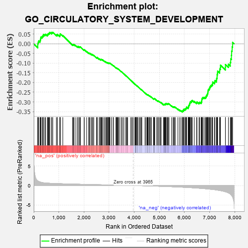
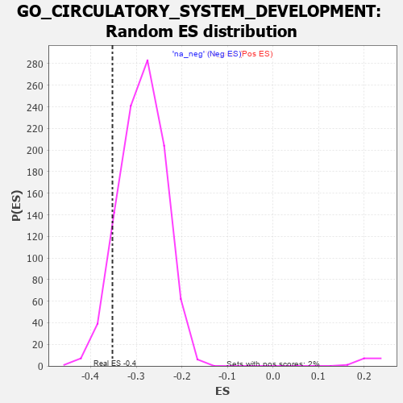

| | | Dataset | 7d |
| Phenotype | NoPhenotypeAvailable |
| Upregulated in class | na_neg |
| GeneSet | GO_CIRCULATORY_SYSTEM_DEVELOPMENT |
| Enrichment Score (ES) | -0.35219297 |
| Normalized Enrichment Score (NES) | -1.223064 |
| Nominal p-value | 0.094416246 |
| FDR q-value | 0.5945529 |
| FWER p-Value | 1.0 |
Table: GSEA Results Summary

Fig 1: Enrichment plot: GO_CIRCULATORY_SYSTEM_DEVELOPMENT
Profile of the Running ES Score & Positions of GeneSet Members on the Rank Ordered List
| PROBE | GENE SYMBOL | GENE_TITLE | RANK IN GENE LIST | RANK METRIC SCORE | RUNNING ES | CORE ENRICHMENT | | 1 | CSRP3 | | | 161 | 1.186 | -0.0104 | No |
| 2 | SPI1 | | | 162 | 1.182 | -0.0000 | No |
| 3 | FOXF1 | | | 176 | 1.136 | 0.0082 | No |
| 4 | WNT16 | | | 198 | 1.072 | 0.0149 | No |
| 5 | LBX1 | | | 254 | 0.929 | 0.0160 | No |
| 6 | TBX20 | | | 267 | 0.880 | 0.0221 | No |
| 7 | HGF | | | 276 | 0.870 | 0.0287 | No |
| 8 | SHOX2 | | | 288 | 0.842 | 0.0347 | No |
| 9 | DLL1 | | | 337 | 0.760 | 0.0352 | No |
| 10 | GSK3A | | | 351 | 0.745 | 0.0400 | No |
| 11 | AXIN2 | | | 383 | 0.713 | 0.0423 | No |
| 12 | BAX | | | 387 | 0.711 | 0.0481 | No |
| 13 | SUFU | | | 443 | 0.665 | 0.0468 | No |
| 14 | LRP1 | | | 470 | 0.648 | 0.0492 | No |
| 15 | SRF | | | 542 | 0.615 | 0.0454 | No |
| 16 | JMJD6 | | | 553 | 0.613 | 0.0494 | No |
| 17 | CCNB1 | | | 581 | 0.601 | 0.0512 | No |
| 18 | FBXW8 | | | 601 | 0.594 | 0.0540 | No |
| 19 | GLMN | | | 632 | 0.583 | 0.0552 | No |
| 20 | SMG9 | | | 643 | 0.579 | 0.0590 | No |
| 21 | VASH1 | | | 712 | 0.556 | 0.0551 | No |
| 22 | ID1 | | | 719 | 0.555 | 0.0592 | No |
| 23 | ZIC3 | | | 760 | 0.542 | 0.0588 | No |
| 24 | HDAC5 | | | 900 | 0.506 | 0.0452 | No |
| 25 | MATR3 | | | 937 | 0.498 | 0.0450 | No |
| 26 | PDCD4 | | | 941 | 0.497 | 0.0489 | No |
| 27 | AKT1 | | | 1040 | 0.476 | 0.0404 | No |
| 28 | YAP1 | | | 1041 | 0.475 | 0.0446 | No |
| 29 | MEF2C | | | 1054 | 0.473 | 0.0472 | No |
| 30 | RBM15 | | | 1057 | 0.473 | 0.0511 | No |
| 31 | GAB1 | | | 1158 | 0.453 | 0.0421 | No |
| 32 | SOS1 | | | 1547 | 0.384 | -0.0046 | No |
| 33 | FZD1 | | | 1574 | 0.379 | -0.0047 | No |
| 34 | NPRL3 | | | 1592 | 0.375 | -0.0036 | No |
| 35 | RXRA | | | 1647 | 0.365 | -0.0074 | No |
| 36 | MEIS1 | | | 1723 | 0.351 | -0.0140 | No |
| 37 | AGO2 | | | 1767 | 0.343 | -0.0165 | No |
| 38 | LRP5 | | | 1769 | 0.342 | -0.0137 | No |
| 39 | SGPL1 | | | 1820 | 0.334 | -0.0172 | No |
| 40 | GATA4 | | | 1837 | 0.330 | -0.0164 | No |
| 41 | SMAD4 | | | 1860 | 0.326 | -0.0164 | No |
| 42 | FOXO4 | | | 2004 | 0.304 | -0.0322 | No |
| 43 | RAF1 | | | 2011 | 0.303 | -0.0303 | No |
| 44 | BMP7 | | | 2107 | 0.290 | -0.0400 | No |
| 45 | SYK | | | 2186 | 0.278 | -0.0477 | No |
| 46 | TCF25 | | | 2213 | 0.275 | -0.0486 | No |
| 47 | CREB1 | | | 2243 | 0.269 | -0.0500 | No |
| 48 | REST | | | 2308 | 0.259 | -0.0560 | No |
| 49 | UBE4B | | | 2313 | 0.258 | -0.0543 | No |
| 50 | BCAS3 | | | 2352 | 0.253 | -0.0569 | No |
| 51 | HIPK2 | | | 2389 | 0.247 | -0.0594 | No |
| 52 | KAT2B | | | 2502 | 0.226 | -0.0719 | No |
| 53 | SALL4 | | | 2523 | 0.223 | -0.0726 | No |
| 54 | MBD3 | | | 2524 | 0.223 | -0.0706 | No |
| 55 | EMC10 | | | 2607 | 0.211 | -0.0793 | No |
| 56 | VAV3 | | | 2614 | 0.210 | -0.0783 | No |
| 57 | EPC1 | | | 2663 | 0.204 | -0.0827 | No |
| 58 | ARID2 | | | 2664 | 0.204 | -0.0809 | No |
| 59 | SASH1 | | | 2682 | 0.201 | -0.0813 | No |
| 60 | KDM6A | | | 2690 | 0.200 | -0.0805 | No |
| 61 | SLIT2 | | | 2724 | 0.195 | -0.0830 | No |
| 62 | RORA | | | 2730 | 0.193 | -0.0820 | No |
| 63 | NSD2 | | | 2784 | 0.185 | -0.0872 | No |
| 64 | RIC8A | | | 2833 | 0.179 | -0.0919 | No |
| 65 | NR2E1 | | | 2844 | 0.177 | -0.0916 | No |
| 66 | FGFR2 | | | 2895 | 0.167 | -0.0966 | No |
| 67 | AGGF1 | | | 2911 | 0.164 | -0.0971 | No |
| 68 | ACVR1 | | | 2932 | 0.161 | -0.0983 | No |
| 69 | TAZ | | | 2933 | 0.161 | -0.0969 | No |
| 70 | SHB | | | 2974 | 0.154 | -0.1007 | No |
| 71 | RNH1 | | | 2977 | 0.153 | -0.0996 | No |
| 72 | PCSK5 | | | 2983 | 0.152 | -0.0989 | No |
| 73 | SMYD1 | | | 2998 | 0.150 | -0.0994 | No |
| 74 | COX17 | | | 3019 | 0.147 | -0.1007 | No |
| 75 | WNT4 | | | 3023 | 0.146 | -0.0998 | No |
| 76 | LEF1 | | | 3037 | 0.144 | -0.1002 | No |
| 77 | AIMP1 | | | 3105 | 0.136 | -0.1077 | No |
| 78 | GPX1 | | | 3109 | 0.135 | -0.1069 | No |
| 79 | PAX6 | | | 3170 | 0.127 | -0.1135 | No |
| 80 | AHR | | | 3175 | 0.126 | -0.1129 | No |
| 81 | SNX17 | | | 3272 | 0.110 | -0.1244 | No |
| 82 | CTDP1 | | | 3279 | 0.109 | -0.1242 | No |
| 83 | SMAD3 | | | 3303 | 0.105 | -0.1263 | No |
| 84 | PARP2 | | | 3316 | 0.103 | -0.1269 | No |
| 85 | SMAD1 | | | 3337 | 0.099 | -0.1286 | No |
| 86 | TAB1 | | | 3351 | 0.097 | -0.1294 | No |
| 87 | SMAD7 | | | 3369 | 0.093 | -0.1308 | No |
| 88 | MED1 | | | 3405 | 0.089 | -0.1346 | No |
| 89 | HGS | | | 3476 | 0.080 | -0.1429 | No |
| 90 | GLI1 | | | 3489 | 0.079 | -0.1438 | No |
| 91 | PIN1 | | | 3543 | 0.069 | -0.1500 | No |
| 92 | MAPK3 | | | 3589 | 0.062 | -0.1553 | No |
| 93 | DCTN5 | | | 3665 | 0.049 | -0.1646 | No |
| 94 | EPN2 | | | 3691 | 0.045 | -0.1674 | No |
| 95 | NF1 | | | 3713 | 0.040 | -0.1698 | No |
| 96 | FMNL3 | | | 3739 | 0.036 | -0.1727 | No |
| 97 | XIRP2 | | | 3854 | 0.020 | -0.1872 | No |
| 98 | NIPBL | | | 3900 | 0.010 | -0.1930 | No |
| 99 | CCM2 | | | 3933 | 0.005 | -0.1970 | No |
| 100 | EYA1 | | | 3987 | -0.006 | -0.2038 | No |
| 101 | VEZF1 | | | 4033 | -0.013 | -0.2095 | No |
| 102 | ATG5 | | | 4051 | -0.016 | -0.2116 | No |
| 103 | DDAH1 | | | 4056 | -0.016 | -0.2120 | No |
| 104 | TAL1 | | | 4064 | -0.018 | -0.2127 | No |
| 105 | SFRP2 | | | 4065 | -0.018 | -0.2126 | No |
| 106 | ROBO2 | | | 4066 | -0.018 | -0.2124 | No |
| 107 | WNT2 | | | 4084 | -0.021 | -0.2144 | No |
| 108 | MTOR | | | 4114 | -0.025 | -0.2179 | No |
| 109 | ABL1 | | | 4125 | -0.027 | -0.2190 | No |
| 110 | PLCE1 | | | 4127 | -0.028 | -0.2189 | No |
| 111 | AP2B1 | | | 4185 | -0.039 | -0.2259 | No |
| 112 | FHL2 | | | 4222 | -0.046 | -0.2302 | No |
| 113 | WDR11 | | | 4262 | -0.052 | -0.2348 | No |
| 114 | WNT11 | | | 4282 | -0.056 | -0.2367 | No |
| 115 | TBX2 | | | 4303 | -0.060 | -0.2388 | No |
| 116 | MYDGF | | | 4429 | -0.081 | -0.2542 | No |
| 117 | SETD2 | | | 4443 | -0.084 | -0.2552 | No |
| 118 | MEF2A | | | 4499 | -0.095 | -0.2614 | No |
| 119 | ILK | | | 4510 | -0.096 | -0.2619 | No |
| 120 | RIN2 | | | 4535 | -0.101 | -0.2641 | No |
| 121 | AAMP | | | 4539 | -0.103 | -0.2636 | No |
| 122 | NTRK2 | | | 4543 | -0.104 | -0.2631 | No |
| 123 | CMA1 | | | 4580 | -0.114 | -0.2667 | No |
| 124 | ADTRP | | | 4612 | -0.120 | -0.2697 | No |
| 125 | GATA3 | | | 4614 | -0.120 | -0.2687 | No |
| 126 | MYLK | | | 4651 | -0.128 | -0.2723 | No |
| 127 | PTK7 | | | 4687 | -0.136 | -0.2756 | No |
| 128 | PLCG1 | | | 4770 | -0.151 | -0.2849 | No |
| 129 | PIM1 | | | 4776 | -0.152 | -0.2842 | No |
| 130 | RTN4 | | | 4783 | -0.154 | -0.2836 | No |
| 131 | SRPK2 | | | 4790 | -0.155 | -0.2830 | No |
| 132 | TERT | | | 4801 | -0.157 | -0.2829 | No |
| 133 | FBXW7 | | | 4816 | -0.161 | -0.2833 | No |
| 134 | SLIT3 | | | 4890 | -0.175 | -0.2912 | No |
| 135 | FZD4 | | | 4940 | -0.186 | -0.2959 | No |
| 136 | EP300 | | | 4941 | -0.186 | -0.2943 | No |
| 137 | PRKDC | | | 4955 | -0.189 | -0.2943 | No |
| 138 | KLF4 | | | 5005 | -0.198 | -0.2989 | No |
| 139 | PDPK1 | | | 5043 | -0.207 | -0.3019 | No |
| 140 | NEK8 | | | 5071 | -0.217 | -0.3035 | No |
| 141 | TBX1 | | | 5166 | -0.241 | -0.3135 | No |
| 142 | PARVA | | | 5187 | -0.245 | -0.3139 | No |
| 143 | SMO | | | 5195 | -0.247 | -0.3127 | No |
| 144 | ATM | | | 5210 | -0.249 | -0.3123 | No |
| 145 | GPR4 | | | 5219 | -0.250 | -0.3111 | No |
| 146 | KRIT1 | | | 5248 | -0.257 | -0.3125 | No |
| 147 | FOXJ2 | | | 5249 | -0.257 | -0.3102 | No |
| 148 | PTEN | | | 5262 | -0.261 | -0.3095 | No |
| 149 | CDK1 | | | 5264 | -0.262 | -0.3073 | No |
| 150 | EPN1 | | | 5304 | -0.272 | -0.3100 | No |
| 151 | NPY2R | | | 5331 | -0.281 | -0.3109 | No |
| 152 | TCF21 | | | 5340 | -0.283 | -0.3094 | No |
| 153 | EPHA1 | | | 5349 | -0.285 | -0.3080 | No |
| 154 | FZD5 | | | 5386 | -0.292 | -0.3101 | No |
| 155 | STIL | | | 5483 | -0.314 | -0.3197 | No |
| 156 | FGFR1 | | | 5543 | -0.332 | -0.3244 | No |
| 157 | SPHK1 | | | 5576 | -0.339 | -0.3256 | No |
| 158 | SMYD2 | | | 5598 | -0.344 | -0.3253 | No |
| 159 | G6PD | | | 5638 | -0.358 | -0.3272 | No |
| 160 | PDCL3 | | | 5738 | -0.388 | -0.3366 | No |
| 161 | BBS4 | | | 5806 | -0.407 | -0.3417 | No |
| 162 | BBS5 | | | 5862 | -0.421 | -0.3451 | No |
| 163 | KCNQ1 | | | 5918 | -0.441 | -0.3483 | Yes |
| 164 | STK11 | | | 5922 | -0.443 | -0.3448 | Yes |
| 165 | PRDM1 | | | 5956 | -0.457 | -0.3451 | Yes |
| 166 | ACTN2 | | | 5960 | -0.458 | -0.3415 | Yes |
| 167 | B9D1 | | | 5962 | -0.459 | -0.3376 | Yes |
| 168 | XBP1 | | | 6011 | -0.475 | -0.3396 | Yes |
| 169 | PRKX | | | 6016 | -0.477 | -0.3359 | Yes |
| 170 | FZD8 | | | 6051 | -0.490 | -0.3360 | Yes |
| 171 | JAG1 | | | 6060 | -0.494 | -0.3327 | Yes |
| 172 | CALR | | | 6077 | -0.499 | -0.3304 | Yes |
| 173 | FBN1 | | | 6080 | -0.499 | -0.3263 | Yes |
| 174 | STK4 | | | 6145 | -0.518 | -0.3300 | Yes |
| 175 | ROCK1 | | | 6152 | -0.520 | -0.3263 | Yes |
| 176 | EGR1 | | | 6165 | -0.527 | -0.3232 | Yes |
| 177 | STIM1 | | | 6169 | -0.528 | -0.3189 | Yes |
| 178 | KLF2 | | | 6182 | -0.532 | -0.3158 | Yes |
| 179 | MYO1E | | | 6200 | -0.537 | -0.3133 | Yes |
| 180 | INSR | | | 6204 | -0.538 | -0.3090 | Yes |
| 181 | SMAD2 | | | 6216 | -0.541 | -0.3057 | Yes |
| 182 | TPM1 | | | 6226 | -0.545 | -0.3020 | Yes |
| 183 | CDC42 | | | 6236 | -0.548 | -0.2984 | Yes |
| 184 | DRC1 | | | 6278 | -0.565 | -0.2987 | Yes |
| 185 | IFT52 | | | 6280 | -0.566 | -0.2939 | Yes |
| 186 | IFT57 | | | 6307 | -0.579 | -0.2922 | Yes |
| 187 | CDKL1 | | | 6388 | -0.610 | -0.2972 | Yes |
| 188 | DYSF | | | 6481 | -0.654 | -0.3033 | Yes |
| 189 | LAMA1 | | | 6496 | -0.659 | -0.2994 | Yes |
| 190 | ROBO1 | | | 6577 | -0.699 | -0.3036 | Yes |
| 191 | MKS1 | | | 6607 | -0.715 | -0.3011 | Yes |
| 192 | TMED2 | | | 6665 | -0.746 | -0.3019 | Yes |
| 193 | VASH2 | | | 6680 | -0.752 | -0.2971 | Yes |
| 194 | SAT1 | | | 6688 | -0.756 | -0.2914 | Yes |
| 195 | PAK1 | | | 6691 | -0.757 | -0.2850 | Yes |
| 196 | EGFR | | | 6708 | -0.765 | -0.2804 | Yes |
| 197 | NPY1R | | | 6732 | -0.776 | -0.2765 | Yes |
| 198 | C2CD3 | | | 6783 | -0.802 | -0.2760 | Yes |
| 199 | FHOD3 | | | 6835 | -0.834 | -0.2752 | Yes |
| 200 | AHI1 | | | 6860 | -0.848 | -0.2709 | Yes |
| 201 | CBY1 | | | 6874 | -0.851 | -0.2651 | Yes |
| 202 | MYH11 | | | 6905 | -0.870 | -0.2614 | Yes |
| 203 | CSPG4 | | | 6918 | -0.878 | -0.2552 | Yes |
| 204 | MIB1 | | | 6932 | -0.890 | -0.2491 | Yes |
| 205 | GHSR | | | 6937 | -0.894 | -0.2418 | Yes |
| 206 | FAT4 | | | 6948 | -0.901 | -0.2352 | Yes |
| 207 | PDE2A | | | 6985 | -0.927 | -0.2317 | Yes |
| 208 | CCR2 | | | 7003 | -0.939 | -0.2256 | Yes |
| 209 | NR4A1 | | | 7022 | -0.951 | -0.2196 | Yes |
| 210 | MYH10 | | | 7048 | -0.966 | -0.2144 | Yes |
| 211 | BBS7 | | | 7089 | -0.988 | -0.2109 | Yes |
| 212 | LDB3 | | | 7119 | -1.008 | -0.2058 | Yes |
| 213 | PTPRB | | | 7122 | -1.010 | -0.1972 | Yes |
| 214 | OVOL2 | | | 7197 | -1.068 | -0.1974 | Yes |
| 215 | IFT74 | | | 7211 | -1.085 | -0.1896 | Yes |
| 216 | QKI | | | 7272 | -1.145 | -0.1873 | Yes |
| 217 | CIB1 | | | 7280 | -1.152 | -0.1781 | Yes |
| 218 | ANK2 | | | 7298 | -1.170 | -0.1700 | Yes |
| 219 | MSX2 | | | 7299 | -1.171 | -0.1597 | Yes |
| 220 | ARMC4 | | | 7311 | -1.181 | -0.1508 | Yes |
| 221 | GRN | | | 7319 | -1.194 | -0.1412 | Yes |
| 222 | CELA1 | | | 7399 | -1.265 | -0.1404 | Yes |
| 223 | LOXL2 | | | 7403 | -1.269 | -0.1296 | Yes |
| 224 | KLF5 | | | 7429 | -1.304 | -0.1214 | Yes |
| 225 | MMP19 | | | 7433 | -1.309 | -0.1103 | Yes |
| 226 | PKD1 | | | 7628 | -1.611 | -0.1213 | Yes |
| 227 | PDCD6 | | | 7630 | -1.615 | -0.1072 | Yes |
| 228 | CASP3 | | | 7747 | -1.902 | -0.1055 | Yes |
| 229 | PKD2 | | | 7822 | -2.167 | -0.0961 | Yes |
| 230 | SP1 | | | 7840 | -2.321 | -0.0779 | Yes |
| 231 | ECE1 | | | 7867 | -2.498 | -0.0594 | Yes |
| 232 | MMP2 | | | 7875 | -2.574 | -0.0377 | Yes |
| 233 | CAV3 | | | 7896 | -2.739 | -0.0163 | Yes |
| 234 | PI16 | | | 7914 | -2.948 | 0.0074 | Yes |
Table: GSEA details [plain text format]

Fig 2: GO_CIRCULATORY_SYSTEM_DEVELOPMENT: Random ES distribution
Gene set null distribution of ES for GO_CIRCULATORY_SYSTEM_DEVELOPMENT